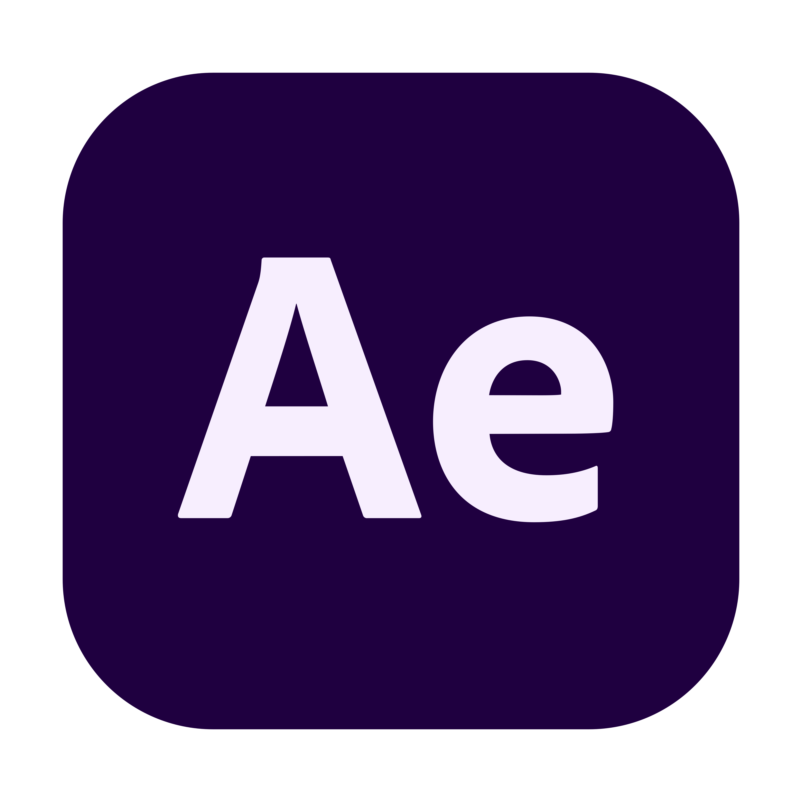

Ferramentas

After Effects
.png) Premier
Premier
Olá! Sou Nathan,tenho 16 anos sou um editor de video; Mesmo jovem, trago uma expertise sólida e uma abordagem criativa para cada projeto que assumo,Meu objetivo é criar vídeos de alta qualidade que transmitam emoção e envolvam o público. Se você está procurando um editor de vídeo comprometido, criativo e ávido por crescimento, estou pronto para colaborar e levar suas ideias ao próximo nível
Premier
Este é um projeto de comercial de supermercado desenvolvido com o After Effects e o Premiere. Utilizei recursos visuais e efeitos especiais para destacar os produtos e criar uma experiência atraente. O After Effects permitiu animações personalizadas e efeitos visuais, enquanto o Premiere foi usado para edição e combinação das cenas. O resultado é um comercial impactante que promove os produtos de forma cativante.
Descrição do projeto 2.